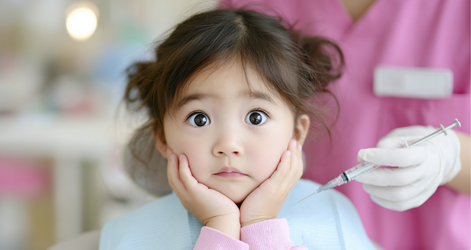
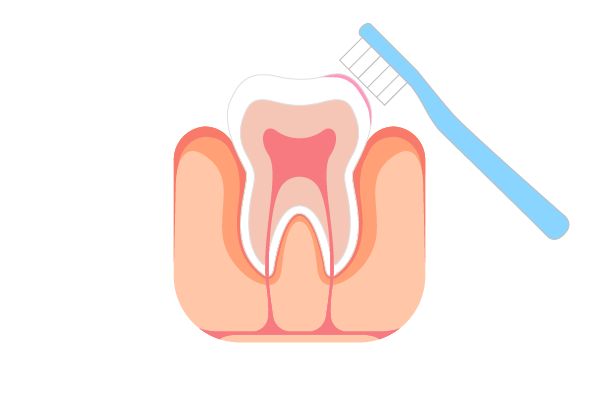
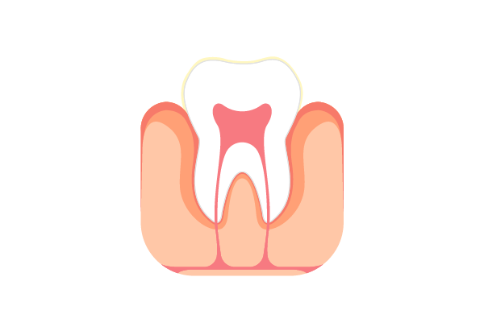
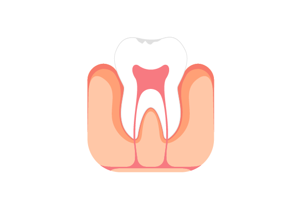
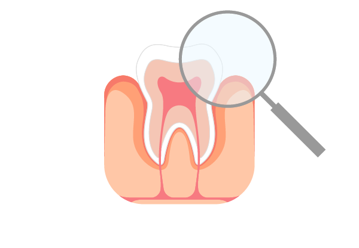

유치부터 시작하는 평생 구강 건강 관리
<%=m_client_en%>
유치부터 시작되는 평생 구강 건강
충치(치아우식증)는 세균이 음식 찌꺼기를 먹고 배출한 산에 의해 치아가 손상되는 질환입니다.
특히 유치는 법랑질이 얇아 충치 진행이 빠르고 신경이 큰 편이라 방치 시 신경치료까지 이어질 수 있어 조기 치료가 중요합니다..
다행히 충치는 예방 효과가 가장 확실한 질환으로, 올바른 칫솔질과 식이 조절, 정기검진을 통한 불소도포·실란트로 충분히 막을 수 있습니다.





충치 발생 위험이
높은 어린이
올바른 양치질 습관이
형성되지 않은
어린이
불규칙한 치아 배열이나
교합 문제가 있는
어린이
설탕이 많은 음식·음료를
자주 섭취하는
어린이
불소 도포나 실란트가
필요한 어린이
치아 발달 단계에서
조기 예방이 필요한
어린이
아이들의 치아는 앞으로 나올 영구치를 위해 유치 시기부터 관리가 잘 되어야 합니다.
제로치과병원에서는 어린 자녀가 무섭고 두렵지 않도록 진정요법과 함께 편안하고 섬세한 치료를 진행합니다.
또한 정기검진을 통해 충치를 효과적으로 예방하고, 성장기 예측(영구치 크기·악골 성장)을 통한 부정교합 예방과 성장 조절까지 가능합니다.